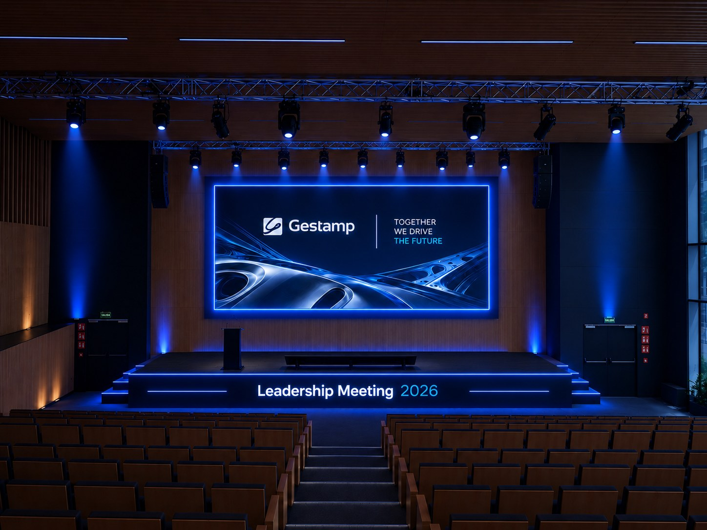

Acreditación y lanyard
01Lanyard impreso in situ en el registro, con el QR de cada asistente.


Propuesta · Madrid · 22.12.2026
01 · Briefing
La Leadership Meeting 2026 reunirá en Madrid a aproximadamente 260 directivos de Gestamp procedentes de 24 países.
La propuesta combinará visión estratégica, conexión entre líderes y reconocimiento de la trayectoria de la compañía. Creatividad, tecnología y precisión operativa trabajarán conjuntamente.
02 · Agenda
Una línea gráfica coherente con la identidad Gestamp y adaptada a todos los puntos de contacto. Key visual simple, con el logo y el nombre del evento.
Lanyard impreso in situ en el registro, con el QR de cada asistente.
Boreal: acceso al auditorio y zonas comunes. Real Fábrica de Tapices: recorrido hasta el almuerzo.
Pantalla, atril y frontal del auditorio de Madnum.
Mapa de mesas a la entrada del almuerzo, en la Real Fábrica de Tapices.
Plan de traslados
Se ha diseñado una operativa de transporte con cinco autocares, coordinando los desplazamientos entre Only YOU Atocha, Madnum, la Real Fábrica de Tapices y el aeropuerto Adolfo Suárez Madrid-Barajas.
Tramo 01 · Only YOU Atocha → Madnum
07:45
Los autocares realizarán la carga de pasajeros de uno en uno en el hotel.
Abrir recorrido en Google MapsTramo 02 · Madnum → Real Fábrica de Tapices
14:00
Reparto de autocares por oleada: pendiente
La llegada y descarga se realizarán de forma escalonada para facilitar el acceso de los asistentes.
Puntos de carga y descarga · Real Fábrica de Tapices
La ubicación definitiva se coordinará con la empresa de transporte según la operativa y las condiciones de parada autorizadas.
Tramo 03 · Real Fábrica de Tapices → Aeropuerto
18:00
22 de diciembreCoincide con el Sorteo de Navidad y el inicio del periodo vacacional, por lo que se prevé tráfico intenso en Atocha y la M-30.
Abrir recorrido en Google MapsLos recorridos son orientativos y deberán validarse con la empresa de transporte, especialmente en lo relativo a las paradas autorizadas, el acceso de autocares y la terminal aeroportuaria.
Acceso al auditorio, señalética y zonas comunes.
Recepción, registro, café y circulación.
Capacidad indicada de 270 personas. Escenario, iluminación, pantalla, atril, frontal, circulación y técnica.
Suministrada por Gestamp.
Acreditación compatible con wallet.
Al menos cuatro, y un punto de incidencias.
Impresión in situ al registrarse.
Vínculo con el QR en estudio, con alternativa offline.
Paseo de la Reina Cristina con Julián Gayarre, y Avenida de la Ciudad de Barcelona con Vandergoten. Llegada escalonada.
Señalética y pantallas de seating.
Almuerzo.
Dos oleadas con 3 minutos de separación.
En los dos puntos de carga junto a la Real Fábrica.
Recorrido hasta el almuerzo.
Mapa de mesas a la entrada. Diseño pendiente.
Control de tiempos y respuesta a incidencias: colas en registro, tráfico, equipaje, congestión en Tapices, guardarropa, movimientos sin abrigo y desviaciones de agenda.
Colas en acreditación
Medida
Resuelve · Colas en acreditación
Retrasos de transporte
Medida
Resuelve · Retrasos de transporte
Confusión de equipajes
Medida
Resuelve · Confusión de equipajes
Congestión en Tapices
Medida
Resuelve · Congestión en Tapices
Colas de guardarropa
Medida
Resuelve · Colas de guardarropa
Movimientos sin abrigo
Medida
Resuelve · Movimientos sin abrigo
Desviaciones del timing
Medida
Resuelve · Desviaciones del timing